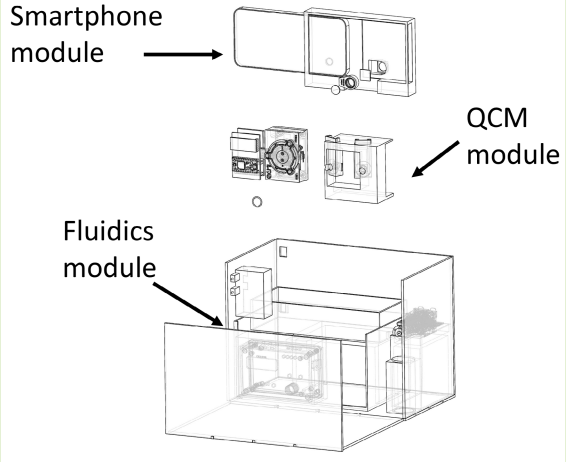
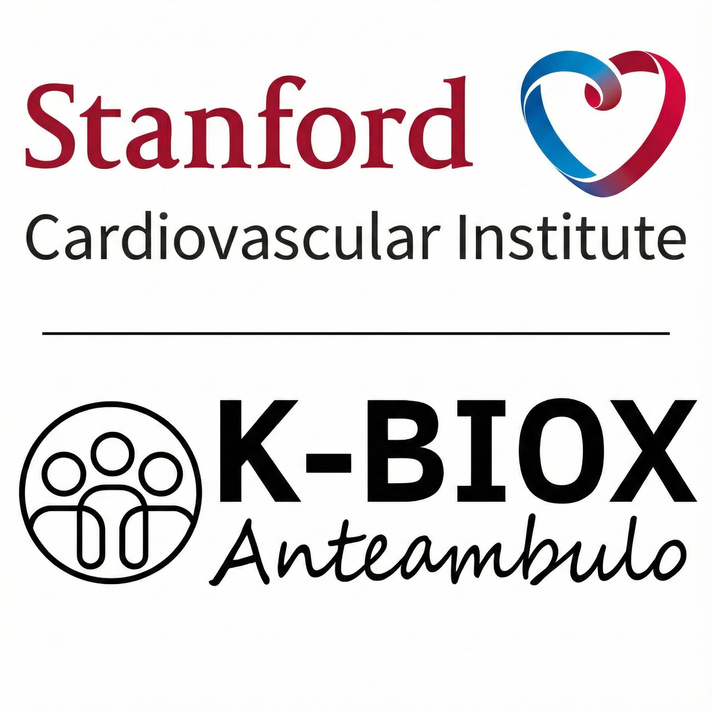

|
Junseok (June) Oh Hi! I'm Junseok, pursuing an MSE in Data Science at the University of Pennsylvania. My goal is to develop human-centric social robots that support caregivers and patients through multimodal interaction. I study multimodal social attention: how an agent can infer who needs attention, what matters in the moment, and when assistance is appropriate from cues like gaze, head orientation, language, and turn-taking. At the MIT Media Lab Personal Robots Group (mentored by Dong Won Lee and Dr. Hae Won Park), I work on multimodal egocentric head-gaze prediction. Previously, I worked on health-focused projects spanning smartphone-based biosensing and single-cell analysis. I also have industry experience at Hewlett Packard Enterprise (HPE), where I worked full-time as a Cloud AI Software Engineer and previously interned in Data Science. I earned my B.S. in Computer Science from Purdue University, with a minor in Mathematics. |
Research |

|
Social Egocentric Head Gaze Prediction with Vision
Embeddings Fused with Speaker Audio Language
Junseok Oh*, Dong Won Lee*, Louis-Philippe Morency, Cynthia Breazeal, Hae Won Park In Preparation project page We study social egocentric head-gaze prediction by fusing vision embeddings with speaker-aware audio and language cues. |
|  |
Smartphone-Integrated Optomechanical Dual-Mode
Instrument for Salmonella Typhimurium Detection
Hyun Jung Min, Hansel A. Mina, Junseok Oh, Amanda J. Deering, J. Paul Robinson, Bartek Rajwa, Euiwon Bae IEEE Sensors Journal, 2025 paper We develop a smartphone-integrated, optomechanical dual-mode biosensing instrument that combines vision-based readout with frequency-shift measurements to enable low-cost, rapid detection of Salmonella Typhimurium for practical food-safety monitoring. |
Research Projects |
|  |
K-BioX - Stanford
Cardiovascular Institute
Built an automated scRNA-seq pipeline over public GEO datasets to compare adult vs. P12 developmental stages, then used GSEA, cell-to-cell interaction profiling, and PCA/UMAP to surface adipogenesis/angiogenesis signals across epicardial adipose tissue (EAT) datasets. |
|
Wittgen Biotechnology -
UC Berkeley SkyDeck
Worked on ML for high-resolution tumor classification and tailored drug recommendations by processing RNA-seq data from 40+ cancer patients, contributing to an AI platform for cancer heterogeneity profiling, and using Seurat for single-cell analysis and cell-type differentiation. |
GitHub Projects |
|
Real-time
Object Recognition |
Real-time Object Recognition
A lightweight repository for real-time object recognition experiments and evaluation. |
|
Egocentric
Dataset |
Egocentric Dataset
Data collection and preprocessing utilities for egocentric video datasets. |
|
Egocentric
Modeling |
Egocentric Modeling
Modeling and experimentation code for egocentric perception tasks. |
Teaching |
|
CS 25200 - Systems Programming
Undergraduate TA, Spring 2023 |
|
Template based on Jon Barron's website; see Leonid Keselman's Jekyll fork. |